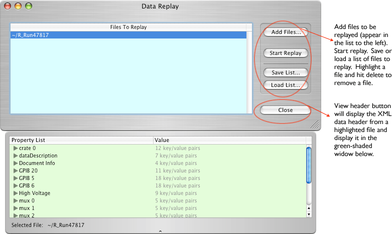

Configuration icon for Data Replayer:
The Data Replayer is used to replay data into another object such as the Data Monitor where one can examine the histograms from a run. It can replay any number of runs back to back and thus add many runs together for display. A single file can be selected to examine it's data header.
